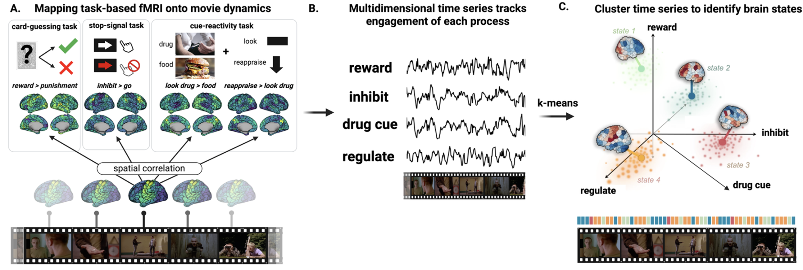
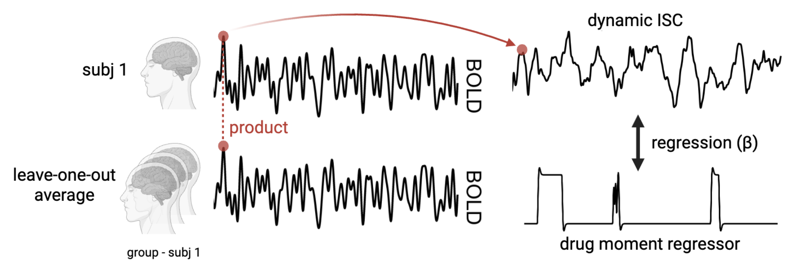
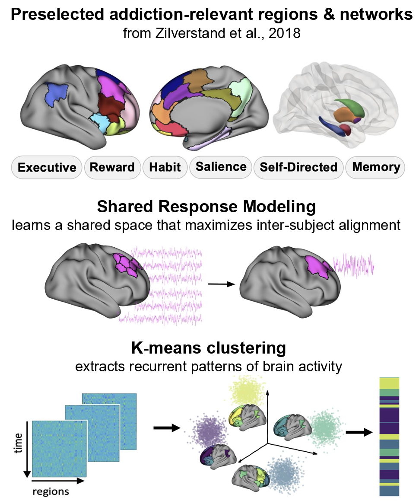

What I'm Working On
My work uses naturalistic neuroimaging paradigms to study addiction. I am broadly interested in how
addiction-related neurocognitive alterations manifest in the real-world, and how we can leverage those
insights to advance brain-based treatments.
Task-Anchored Brain States During Movie-Viewing in Opioid Use Disorder

Using fMRI data collected while people watch a drug-themed film, I am investigating how large-scale
brain networks reconfigure over time, shifting to and from different profiles of cognitive engagement
throughout the movie. I then use the brain's white-matter wiring to model why some people may get
"stuck" in maladaptive states and find it harder to reach states of control.
(Part of image adapted from Olafson et al., 2022)
Menstrual Phase Modulates Neural Synchrony to a Drug-Themed Movie in Cocaine Use Disorder

We know drug addiction involves marked neurocognitive alterations in drug-related contexts, but
their fluctuation across the menstrual cycle and hormonal basis in women remain unknown. Here, I'm
investigating drug-biased synchronization to a drug-themed movie in women with cocaine use disorder,
and how their menstrual phase and hormone levels affect that.
Drug-Biased Brain State Dynamics During a Drug-Themed Movie in Individuals with Opioid Use Disorder
In this project, I apply clustering directly to shared responses in addiction-relevant regions and
assess how the resulting brain dynamics are altered in real-world-like drug-related contexts,
between groups and by the movie content.

Publications
* denotes equal contribution
Peer-Reviewed Journal Articles
McClain N*, Ceceli AO*, Kronberg G, Alia-Klein N, Goldstein RZ. (2025) Moving beyond self-report in characterizing drug addiction: Using behavioral measures to inform treatment adherence. Biological Psychiatry: Global Open Science.
Ceceli AO, Huang Y, Kronberg G, McClain N, King S, Butelman E, Alia-Klein N, & Goldstein RV. (2025) The impaired Response Inhibition and Salience Attribution (iRISA) model of drug addiction: recent neuroimaging evidence and future directions. Annual Reviews Psychology.
Ceceli AO, King S, Drury K, McClain N, Gray J, Dassanayake PS, Newcorn J, Schiller D, Alia-Klein N, Goldstein R. (2025) The neural signature of methylphenidate- and reconsolidation-enhanced memory disruption in human drug addiction. PNAS.
Huang Y, Butelman E, Ceceli AO, Kronberg G, King SG, McClain NE, Wong Y, Boros M, Drury K, Sinha R, Alia-Klein N, Goldstein RZ. (2025) Sex and hormonal effects on drug cue-reactivity and its regulation in human addiction. Biological Psychiatry.
Kronberg G*, Ceceli AO*, Huang Y, Gaudreault PO, King SG, McClain N, Alia-Klein N, Goldstein RZ. (2024) Naturalistic drug cue reactivity in heroin use disorder: orbitofrontal synchronization as a marker of craving and recovery. Brain.
Liao Z, Gonzalez KC, Li DM, Yan CM, McClain NE, Zhang G, Evans SW, Chavarha M, Simko J, Makinson CD, Lin MZ, Losonczy A, Negrean A. (2024) Functional architecture of intracellular oscillations in hippocampal dendrites. Nature Communications, 15(1).
Ceceli AO, Huang Y, Gaudreault PO, McClain NE, King SG, Kronberg G, Brackett A, Hoberman GN, Gray JH, Garland EL, Alia-Klein N, Goldstein RZ. (2024) Recovery of inhibitory control prefrontal cortex function in inpatients with heroin use disorder: A 15-week longitudinal fMRI study. Nature Mental Health, 2(6), 694–702.
Ceceli AO, Huang Y, Kronberg G, Malaker P, Miller P, King SG, Gaudreault PO, McClain N, Gabay L, Vasa D, Newcorn JH, Ekin D, Alia-Klein N, Goldstein RZ. (2023) Common and distinct fronto-striatal volumetric changes in heroin and cocaine use disorders. Brain, 146(4), 1662–1671.
Ceceli AO, King SG, McClain N, Alia-Klein N, Goldstein RZ. (2023) The Neural Signature of Impaired Inhibitory Control in Individuals with Heroin Use Disorder. Journal of Neuroscience, 43(1), 173–182.
Preprints & In Preparation
King S, Kronberg G, McClain N, Zhang Z, Ceceli A, Huang Y, Alia-Klein N, Goldstein R. (In preparation) Verbal recall of a drug-themed movie captures treatment effects and neural encoding in heroin use disorder.
Huang Y, Ceceli AO, Kronberg G, Drury KR, King SG, McClain NE, Wong YY, Boros M, Butelman ER, Gaudreault PO, Parvaz MA, Alia-Klein N, Garland EL, Goldstein RZ. (Under revision in JAMA Psychiatry) Mindfulness-Oriented Recovery Enhancement rebalances prefrontal responses to drug and natural reward cues in opioid use disorder.
McClain N*, Huang Y*, Kronberg G, Alia-Klein N, Goldstein R. (In preparation) Menstrual phase and hormonal effects on drug-biased synchronization in women with cocaine addiction.
McClain N, Kronberg G, Alia-Klein N, Goldstein R. (In preparation) Altered brain state dynamics during a drug-themed movie in opioid use disorder.
Presentations
Oral Presentations
Kronberg G*, McClain N*, Alia-Klein N, Goldstein R. (2026) Brain-to-brain neurofeedback to facilitate recovery in opioid use disorder. American Society of Clinical Psychopharmacology; Miami, FL. (presenter: McClain N)
McClain N, Kronberg G, Drury K, Alia-Klein N, Goldstein RZ. (2026) Altered brain state dynamics during a drug-themed movie in opioid use disorder. Gordon Research Conference: Neurobiology of Addiction; Barcelona, Spain.
Huang Y, McClain N, Kronberg G, Butelman ER, Ceceli AO, King SG, Wong YY, Boros M, Drury R, Sinha R, Alia-Klein N, Goldstein RZ. (2026) Sex Differences and Hormonal Effects in Drug Cue-reactivity and its Regulation in Human Drug Addiction. American College of Neuropsychopharmacology; Nassau, Bahamas.
King S, Kronberg G, McClain N, Zhang N, Ceceli A, Gray J, Alia-Klein N, Goldstein RZ. (2023) Verbal movie recall reveals heightened self-reference in individuals with heroin use disorder. Society for Neuroscience; Washington, DC.
McClain N & Ceceli AO. (2022) Impaired Salience Attribution in Drug Addiction. Barnard College Neuroscience & Behavior Senior Thesis Conference; New York, NY.
Poster Presentations
McClain N*, Huang Y*, Kronberg G, Drury K, Alia-Klein N, Goldstein RZ. (2026) Menstrual Phase Effects on Brain State Dynamics during a Drug-Themed Movie in Cocaine Addiction. American College of Neuropsychopharmacology; Nassau, Bahamas.
McClain N, Drury K, Kronberg G, Alia-Klein N, Goldstein RZ. (2025) Reduced Synchronization of Neural Responses to a Drug-Related Movie in Opioid Use Disorder. Friedman Brain Institute Retreat; New York, NY.
McClain N*, Ceceli AO*, Kronberg G, Alia-Klein N, Goldstein RZ. (2024) Beyond self-report in characterizing drug addiction: Using behavior to inform treatment adherence. Friedman Brain Institute Retreat; New York, NY.